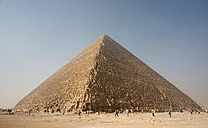

Introduction
The Great Pyramid of Giza (also known as the Pyramid of Khufu or the Pyramid of Cheops) is the oldest and largest of the three pyramids in the Giza pyramid complex bordering what is now El Giza, Egypt.
Based on a mark in an interior chamber naming the work gang and a reference to the fourth dynasty Egyptian Pharaoh Khufu, Egyptologists believe that the pyramid was built as a tomb over a 10- to 20-year period concluding around 2560 BC. Initially at 146.5 metres (481 feet), the Great Pyramid was the tallest man-made structure in the world for more than 3,800 years. Originally, the Great Pyramid was covered by limestone casing stones that formed a smooth outer surface; what is seen today is the underlying core structure. Some of the casing stones that once covered the structure can still be seen around the base. There have been varying scientific and alternative theories about the Great Pyramid's construction techniques.
Key Facts
| Country: | Egypt |
| Year Built: | 2580–2560 BC |